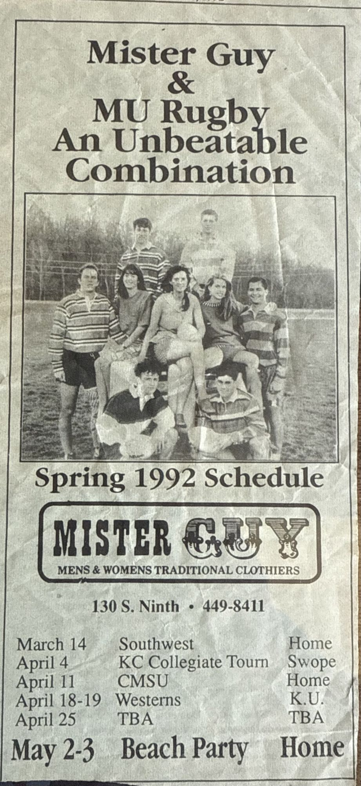
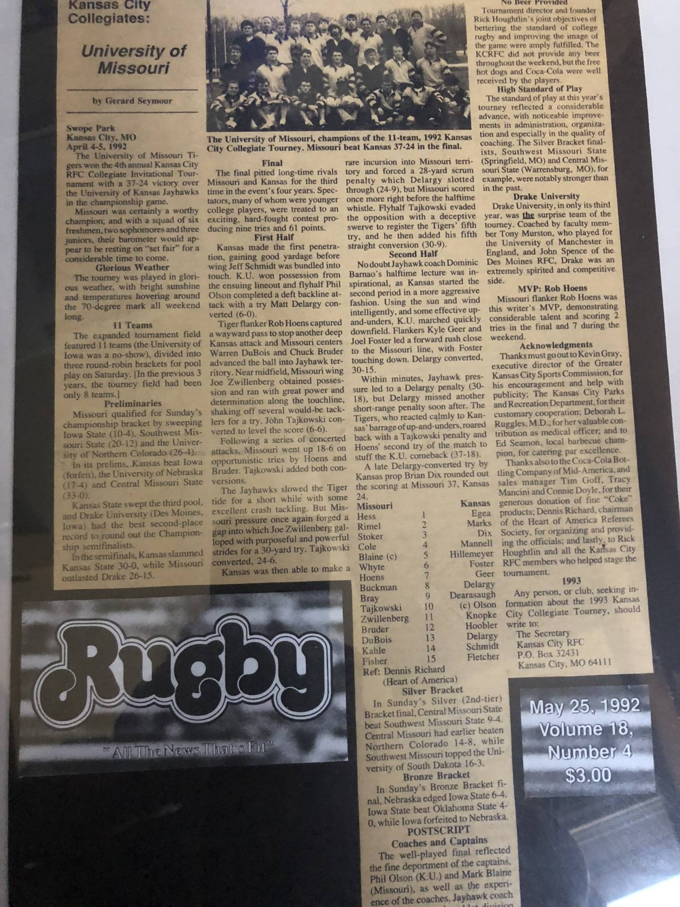

Mizzou Rugby Season Archive
Kansas City Collegiate Invitational Champions · Beat Kansas 37–24 in the final
Five wins in two days at Swope Park, and a fourth-annual title taken off Kansas.
Missouri won the fourth annual Kansas City RFC Collegiate Invitational at Swope Park on April 4–5, 1992, beating Kansas 37–24 in the championship match. The field had expanded to eleven teams that year, split into three round-robin pools, and the Tigers swept their pool on Saturday before coming through the championship bracket on Sunday. The squad carried six freshmen, two sophomores and three juniors.
Flanker Rob Hoens was named the tournament's most valuable player, scoring two tries in the final and seven across the weekend. Mark Blaine captained the side. The final produced nine tries and 61 points, with John Tajkowski converting five in a row, and Dennis Richard of the Heart of America society refereeing.
| Round | Opponent | Result |
|---|---|---|
| Pool play | Iowa State | W 10–4 |
| Pool play | Southwest Missouri State | W 20–12 |
| Pool play | Northern Colorado | W 26–4 |
| Semifinal | Drake | W 26–15 |
| Final | Kansas | W 37–24 |
Results as reported by Gerard Seymour in Rugby magazine, May 25, 1992.
Printed in a Mister Guy advertisement in the Columbia Missourian.
| Date | Opponent | Site |
|---|---|---|
| March 14 | Southwest | Home |
| April 4 | KC Collegiate Tournament | Swope |
| April 11 | CMSU | Home |
| April 18–19 | Westerns | K.U. |
| April 25 | TBA | TBA |
| May 2–3 | Beach Party | Home |

Results for these fixtures are not recorded. Know how they finished? Use the form below.
Players who have told us they wore the Black and Gold this season.
| Name |
|---|
| Mark Blaine (Captain) |
| David Bray |
| Charles Bruder |
| Bob Buckman |
| Fred Cole |
| Warren DuBois |
| Pete Fisher |
| Pat Hess |
| Rob Hoens |
| Jason Jent |
| Chris Justice |
| Mason Kahle |
| Nick Kujawa |
| Geof Massa |
| Mike Moriarity |
| Ed Reed |
| Bob Rimel |
| Aaron Stoker |
| John Tajkowski |
| Tim Whyte |
| Joe Zwillenberg |
This roster comes from alumni submissions and is not yet complete. Missing a teammate? Use the form below.

Roster info, season records, photos, stories — every detail helps.